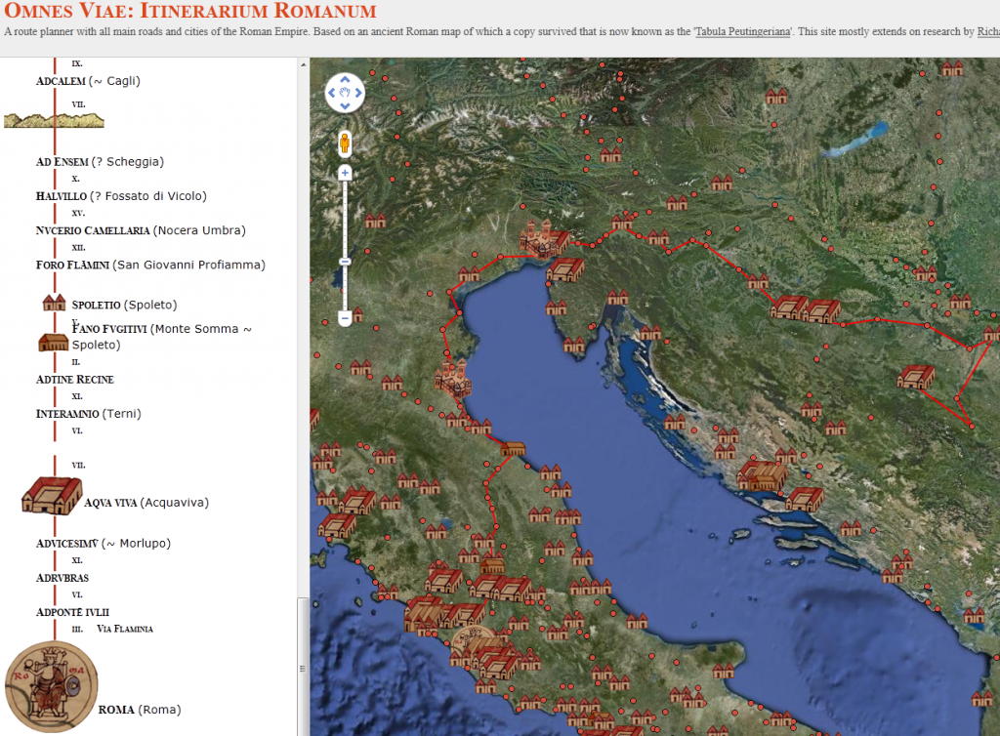

That’s what you’ll cross on your way to Rome from Sarajevo. You could stop at Ravenna or Aqvuileia or Interamnio. It is a much more pleasant trip than the overland route from Hippo, where Augustine wrote the City of God.
Omnes Viae is a trip planner for travel around the Roman Empire as portrayed on the Peutinger Table. Its creator integrated the symbols from that table as place markers on a Google Maps API and provided modern placenames for many of the locations.
A very interesting way to look into the past.